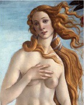

İtalyan ressam Sandro Botticelli (1455-1510) tarafından yapılan Venüs’ün Doğuşu, güzellik tanrıçası Venüs’ün doğumunun ardından denizden sahile savrulduğu anı sahneler. Floransalı varlıklı bir banker ailesi olan Mediciler’e ait Castello’daki bir köşk için 1485 yılı civarında yapılan eser, ahşap üzerine suluboya çalışmadır.

Erken Rönesans döneminde pek çok sanatçı, Yunan ve Roma kültürünün Hıristiyan inançlarıyla uzlaşabileceğine inanan Marsilio Ficino (1433-1499) gibi Yeni-Platoncu düşünürlerden etkilendi. 1480’lerde Botticelli’ye, pagan mitolojisini Hıristiyan kavramlarla birleştiren bir dizi büyük boy resim, Medici tarafından sipariş edildi. Bunların arasında İlkbahar, Mars ve Venüs ile Venüs’ün Doğuşu gibi başyapıtlar da vardı.
Yunan efsanesine göre Venüs, Dev Kronos’un, babası Uranüs’ü hadım edip cinsel organlarını okyanusa fırlatmasıyla su yüzeyinde oluşan köpüklerden doğdu. Tanrıça, Kıbrıs kıyılarına, sonraları kültüne büyük saygı duyulacak olan yere geldi. Yeni-Platoncu düşünceye göre, Venüs’ün doğuş efsanesi insan ruhunun yaratımına dair bir alegoriydi.
Botticelli’nin resminde, iki rüzgâr tanrısından biri olan Zephyrus, Venüs’ü karaya doğru üfler. Büyük bir deniz kabuğu üzerinde duran tanrıça, Yunan heykeltıraş Praxiteles tarafından yapılan eserlerde olduğu gibi antik ‘Venüs masumiyetiyle’ tasvir edilir. Güller, çevresinde havada yüzerken, bir taraftan da onun yeni doğmuş vücudunun üzerine çiçek kaplı bir giysi geçirmeye hazırlanan bir kadın (muhtemelen peri kızı Pomona) tarafından selamlanır. Hem güller hem de portakal ağacı yaprakları, altın renkleriyle oldukça çarpıcıdır.
Hayatının ileriki zamanlarında Botticelli, Girolama Savonarola (1452-1498) adında karizmatik bir Dominiken keşişinin etkisi altına girdi. Savonarola, 1497’de insanları lüks eşyaları imhaya teşvik etmek üzere “Gösteriş Objelerini Yakın!” (Bonfire of the Vanities) hareketini organize etti. Pagan kültüre olan ilgisinden pişmanlık duyan Botticelli iddialara göre kendi eserlerinin bile bazılarını yaktı.
EK BİLGİLER:
1. Venüs’ün Doğuşu, günümüzde Floransa’nın Uffizi Galerisi’nde görülebilir.
2. Sağdaki koyu yeşil yapraklı altın rengiyle vurgulanan portakal koruluğu, Yunan mitolojisindeki “Hespeides Bahçesi”ni temsil ediyor olabilir.
3. Resimde Venüs’e bir elbise sunan kadın, papatyalar, çuha çiçekleri ve mavikantaronla, yani bir doğumu kutlamaya uygun tüm bahar çiçekleriyle bezeli bir elbise giymektedir.